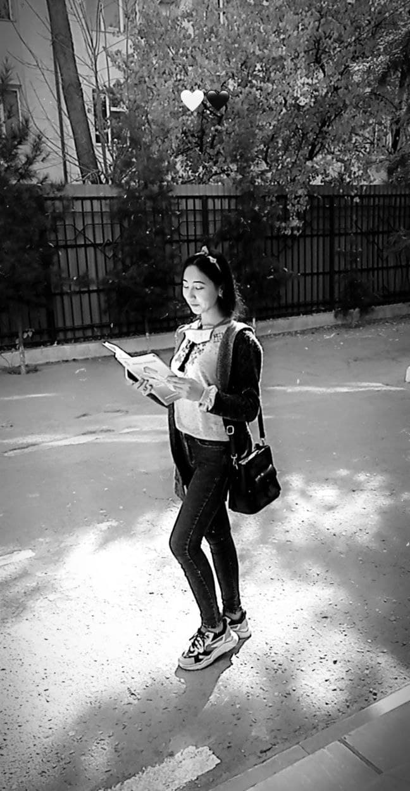
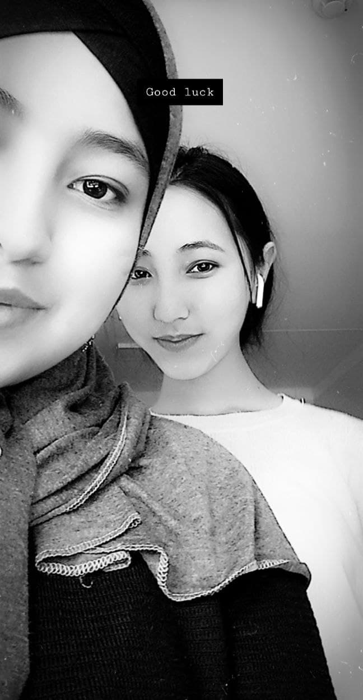

| # | Вопрос | Ответ |
|---|---|---|
| 1 | Ф.И.О | Жалилова Мохинур Кобулжоновна |
| 2 | Дата рождения | 30.11.2003 |
| 3 | Какое твоё любимое блюдо? | Пицца, пельмени, борщ |
| 4 | Любимый предмет? | Биология, Химия |
| 5 | Твоя мечта? | Стать главным врачом, и жить счастливо вместе с семьёй |
| 6 | Телефон номера и адрес | 906222638 город Андижан Булакбошинский район улица ок сув 30.дом |
| 7 | 3 человека из нашего класса которые изменили твою жизнь? | Умида, Эзоза, Фарангиз |
| 8 | Знак зодиака? | Стрелец |
| 9 | Какой подарок ты бы хотела на свой д.р? | Что то необычное на память |
| 10 | Какой стиль одежды ты предпочитаешь? | Онли Классический |
| 11 | Можешь ли держать себя в руках когда зла? | Да конечном |
| 12 | Какую суперсилу ты бы хотела? | Проявить человека которого я соскучилась |
| 13 | Любимая песня/группа/певц(ца)? | Канги, Жони, Рауф,Фаик, и др. |
| 14 | Перечисли вещи каторые делают тебя счастливой? | Порадовать своих родителей своими достижениями, и наградить их своими успехами |
| 15 | Преставь, что ты больше не увидешь одноклассников, что бы ты хотела им сказать? | Всем сказала бы все ихни положительные стороны, и попросила бы прощения если их обидела |
| 16 | Вопрос каторый тебя интересует? | Как они думают обо мне? |
| 17 | Черты характера, каторые тебе нравяться в людях? | Толерантность, ответственность, правдивость |
| 18 | Что ты больше всего ненавидешь? | Когда врут, и когда не правильно судят человека |
| 19 | Ваша фирменная реплика? | ? |
| 20 | Что ты никогда не простишь? | Измену и ложь |
| 21 | Что ты понимаешь под словом "любовь"? | Когда он или она принимает все качества в этом человеке(и положительные и отрицательные) и готов(а) провести всю свою жизнь с ней(с ним). |
| 22 | Чего вы боитесь? | Потерять всех своих близких и друзей |
| 23 | Вы не устали? | Нет еще |
| 24 | Что тебе нравится в себе? | Моя преданность, ответственность и добродушность |
| 25 | Любимое блюдо?(вымышленное) | Онли сыр с калбасой а еще это всё в мармилате) |
| 26 | Какие качества ты предпочитаешь в человеке, с каторым ты хочешь пройти дальше жизненый путь? | Преданного, ответственного, любящего, наблюдательного, умного, понимающего........ |
| 27 | Если бы сегодня был твой последний день, как бы ты его провела? | Читала только намаз и коран) |
| 28 | Ты независимый человек? | Да.... иногда |
| 29 | Как ты успокаиваешься? | Вспоминаю счастливые дни, и танцую под музыкой |
| 30 | Каго ты считаешь своим наставником? Почему? Какая твоя мотивационная цытата? | "Некто не умнее тебя, они просто начали раньше тебя" |